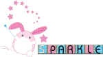

people ask me "marc, what are you actually into?" and honestly, great question. so i sat down and ranked it. here is the official, scientifically rigorous, peer-reviewed-by-nobody top 10.

10. socks fresh out of the dryer
putting them on immediately is one of life's few perfect experiences. zero notes. whoever invented the dryer deserves a statue.
9. finding money in last winter's jacket
it's not income, it's a gift from past me. past me is a legend.
8. when shuffle reads your mind
2,000 liked songs and it picks EXACTLY the right one. the algorithm and i share a soul on these days.
7. the friday evening feeling
the whole weekend is still ahead of you. nothing has gone wrong yet. infinite potential. best feeling in the universe.
6. friendlies that go until 2am
you said "one more game" four hours ago. everyone knows it's a lie. everyone keeps saying it. that's friendship.
5. the first spin of a new record
the sleeve, the smell, that first little crackle before the music starts. streaming will never know this joy.
4. snacks at 2am
food eaten standing in the kitchen light at 2am tastes 40% better. this is documented science (by me, just now).
3. rain when you have nowhere to be
same rain that ruins a commute becomes premium cozy ambiance the second you don't have to go outside. incredible how that works.
2. sleeping in with no alarm
waking up naturally and realizing you don't have to be anywhere? that's what the ancients meant by paradise.
1. landing the perfect combo
you've done it once. exactly once. no recording exists. the witnesses have forgotten. but YOU know. and that's enough to keep playing forever.

★ honorable mentions: dogs in little jackets, the first sip of cold water, patrick ★
got a favorite thing i missed? put it in the guestbook.